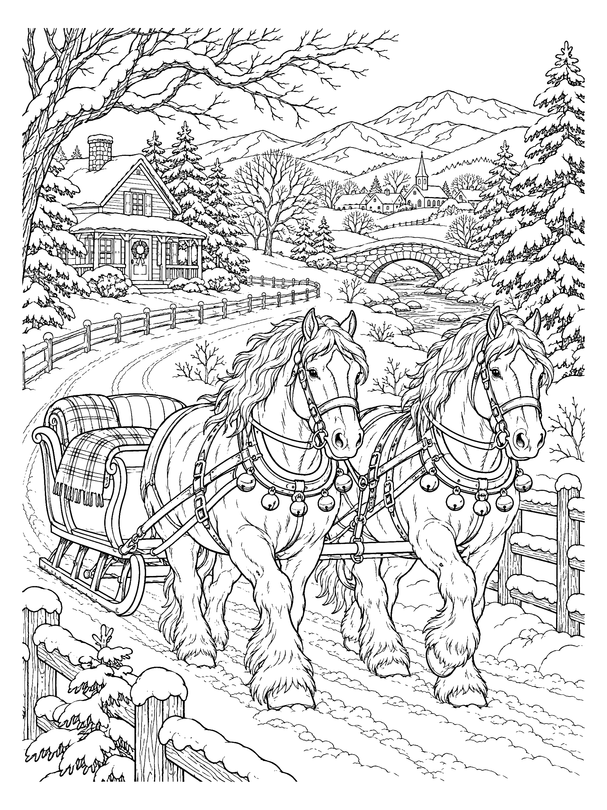
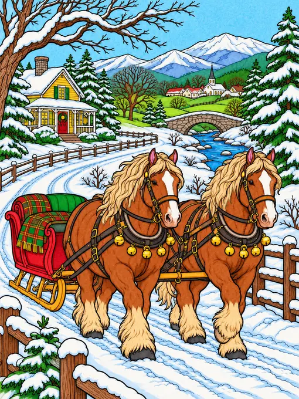

Horse-Drawn Sleigh Coloring Page
Realistic Free printable · Letter and A4
Two draft horses pulling a sleigh with bells through a snowy country lane lined with fences and evergreen trees.

Color ideas
Here is one way to color it. Good colors to pull out: brick red, dark brown, brown, forest green, sky blue, lavender.
Want this small colored picture printed in the corner of the page as a guide? Open the print options and switch on Color guide.
About this page
True-to-life line art with fine detail. Good for older kids, teens and adults.
It prints on one sheet of regular paper. For markers, use heavier paper or put a spare sheet underneath. In the print options you can also print two per sheet, switch to light gray lines, or add a name line.